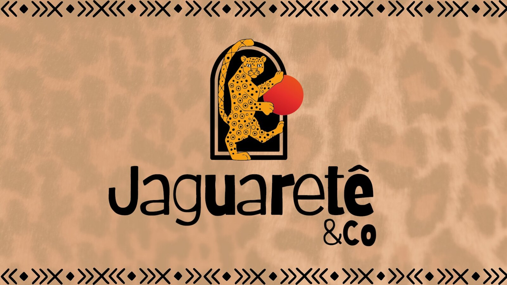
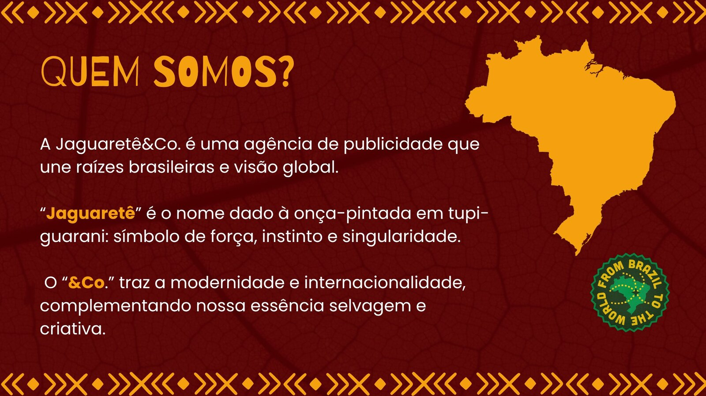
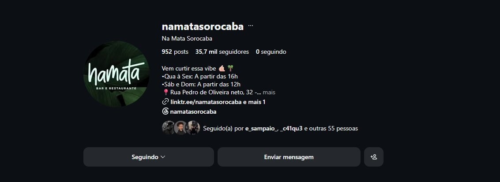
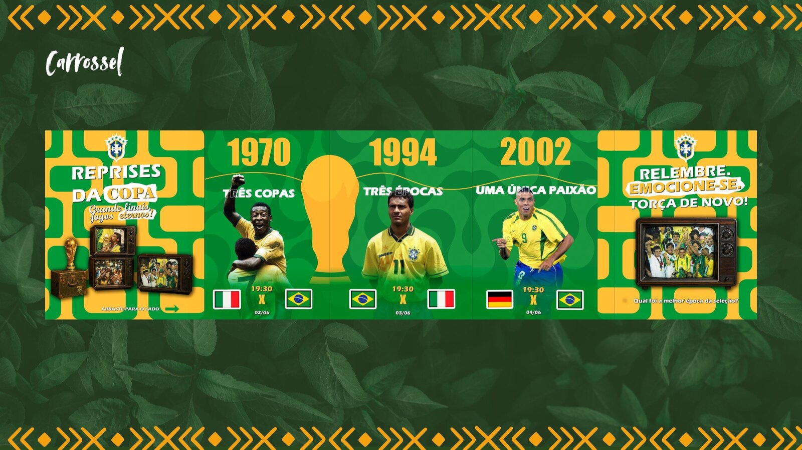
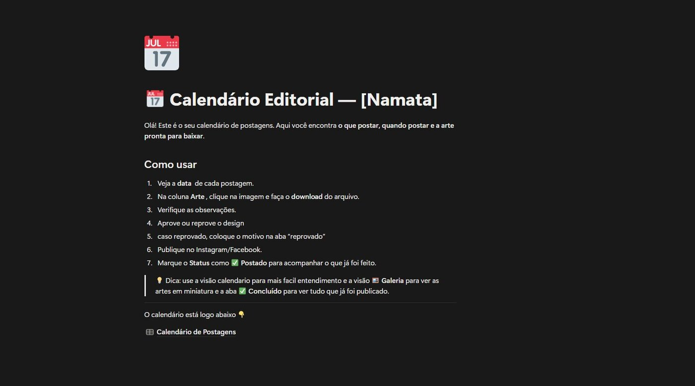

CASE 01
Namata
2025—2026

Cliente / Segmento
Namata · Bar e restaurante
Atuação
Atendimento, estratégia, campanhas, conteúdo e articulação de entregas com equipe criativa.
Frentes do case
Quarta-feira Delas · Esquenta da Copa
02Campanhas reunidas em um mesmo case
360°Da ideia e planejamento à execução
25/26Período do projeto
01A / CampanhaNamata
Quarta-feira
Delas

Campanha pensada para fortalecer a comunicação da noite, organizar a mensagem e conectar a proposta do evento à experiência do público.
01B / CampanhaNamata
Esquenta
da Copa

Campanha temática com desdobramentos digitais, calendário editorial e uma página dedicada para reunir as informações da ação.
